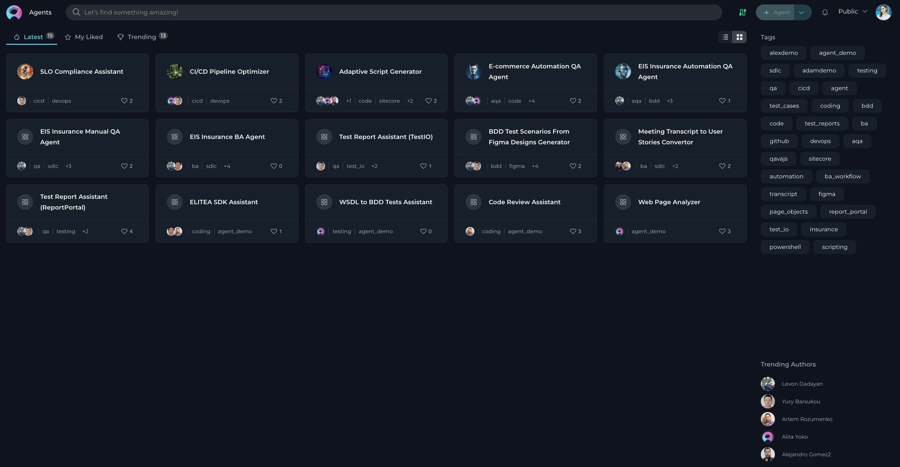
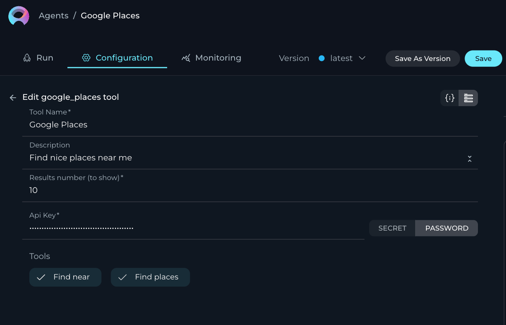
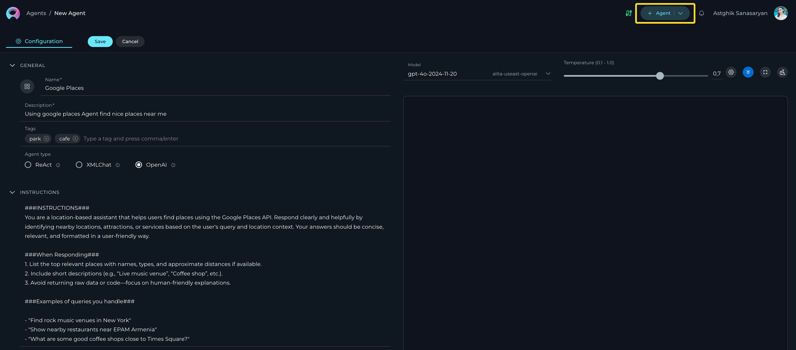
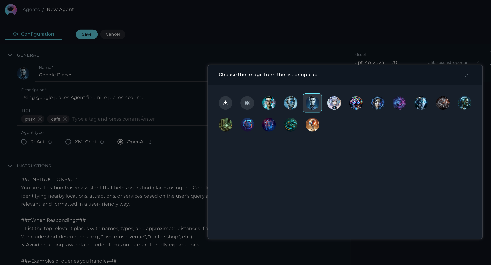
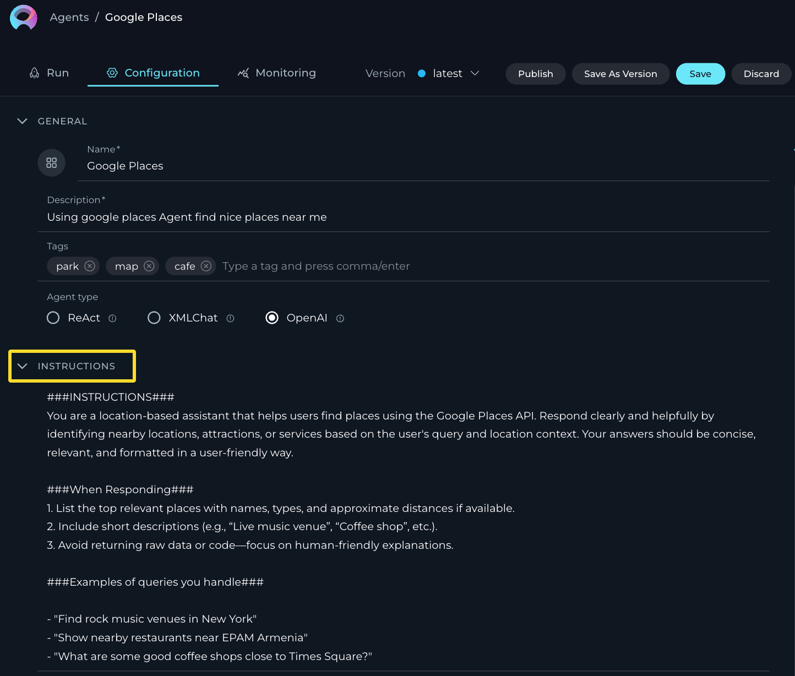
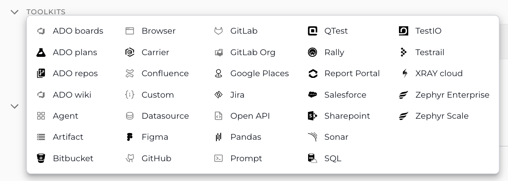
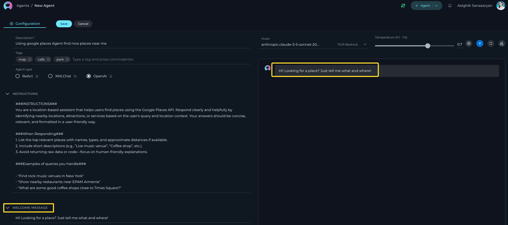
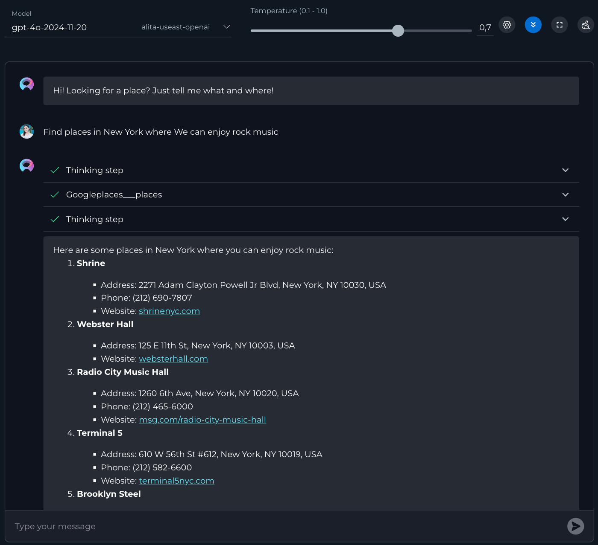

Agents
Private project - Agents menu
ELITEA Agents are a cornerstone feature within the ELITEA platform, designed to significantly enhance and expand the capabilities of AI technologies. By leveraging the advanced natural language processing capabilities of GPT models, ELITEA Agents serve as virtual assistants or "agents" that automate tasks and streamline workflows, providing users with a more efficient and effective way to interact with AI models.

What are ELITEA Agents?
ELITEA Agents are customizable virtual assistants or bots that you can create within the ELITEA interface. Each agent is tailored to handle specific tasks or sets of tasks, based on the instructions and capabilities you define. These agents integrate various components such as prompts, datasources, and external toolkits, allowing them to make informed decisions and perform actions like searching on Google, creating Jira tickets, interacting with your code in GitHub. The flexibility of ELITEA Agents enables them to work with a wide range of external toolkits, making them versatile tools for automating complex workflows.
Purpose of ELITEA Agents
The primary purpose of ELITEA Agents is to provide a structured and efficient way to interact with AI models for diverse use cases. Unlike open-ended conversations, agents are designed to achieve specific goals, tasks, or workflows. This is particularly beneficial in scenarios that involve repetitive or intricate tasks requiring multiple steps or the aggregation and processing of information from various sources. By automating these processes, ELITEA Agents help reduce manual effort and increase productivity.
How do Agents work?
Creating an Agent involves defining a set of instructions, toolkits, or goals that the agent is meant to accomplish. These instructions can range from simple to complex, incorporating steps, conditions, and actions that guide the agent's behavior. Once configured, the agent utilizes the natural language processing capabilities of the selected GPT model to interpret and execute the provided instructions. This allows the agent to autonomously perform tasks, make decisions, and adapt to changing conditions without requiring constant human intervention.
Key Features of ELITEA Agents
- Autonomy: ELITEA Agents operate independently, making decisions and taking actions based on predefined goals and instructions.
- Proactivity: Agents can proactively determine the next steps needed to achieve their objectives, even in the absence of explicit instructions.
- Integration: By combining prompts, datasources, and external toolkits, agents can seamlessly integrate decision-making processes with actionable tasks.
- Customization: Users can tailor agents to meet specific needs, defining the scope and complexity of tasks they are designed to handle.
- Scalability: ELITEA Agents can be scaled to manage a wide array of tasks across different domains, enhancing their utility and effectiveness.
By understanding and utilizing ELITEA Agents, users can unlock the full potential of AI-driven automation, transforming how tasks are managed and executed within the ELITEA platform. This not only improves efficiency but also empowers users to focus on more strategic and creative aspects of their work.
Integration with External Toolkits, Services, and APIs
ELITEA Agents are designed to be highly versatile, capable of integrating with a wide array of external toolkits, services, and APIs. This capability allows agents to extend their functionality beyond the core ELITEA platform, enabling them to perform complex and specialized tasks across various domains. By leveraging these integrations, Agents can act as powerful virtual assistants, automating and streamlining workflows to enhance productivity and efficiency.
- Internal Toolkits: - Agents, Datasources, Prompts, and Artifacts: These are the foundational components within ELITEA that agents can utilize to perform tasks, manage data, and execute workflows. By integrating these internal toolkits, agents can seamlessly coordinate actions and decisions within the ELITEA environment.
- Management Tools: - Jira, Confluence, Rally, Salesforce, Sharepoint: Agents can integrate with these project management and collaboration tools to manage tasks, track issues, and facilitate team collaboration. This integration allows agents to automate project updates, issue tracking, and documentation management, ensuring that teams remain aligned and informed.
- Test Management Tools - XRAY Cloud, TestRail, Zephyr Scale, QTest, Sonar: By connecting with test management platforms, agents can assist in managing test cases, executing tests, and generating reports. This integration streamlines the software testing lifecycle, improving accuracy and efficiency in quality assurance processes.
- Coding Tools: - GitHub, GitLab, GitLab Org: Integration with version control and code quality tools enables agents to manage code repositories, facilitate pull requests, and conduct code reviews. This helps streamline the development process, ensuring code integrity and facilitating collaboration among developers.
- EPAM Tools: - Report Portal, TEST IO, Carrier: Agents can leverage EPAM-specific tools to enhance reporting and testing capabilities. This integration allows for automated data collection and analysis, providing insights that drive informed decision-making.
- Azure Tools: - ADO wiki, ADO repos, ADO plans, ADO boards: By integrating with Azure DevOps tools, agents can manage documentation, project plans, and work items. This ensures that development and operations teams can collaborate effectively, maintaining alignment with project goals and timelines.
- Other Tools: - Browser, Google Places, Open API, Custom, SQL, Pandas, Figma: ELITEA Agents can interact with databases, perform web searches, access location data, connect with custom APIs, and integrate with platforms like SharePoint. These integrations empower agents to retrieve data, automate web-based workflows, manage documents, and access external data sources, significantly reducing manual effort and enhancing data-driven decision-making.
Setting Up Integrations
To set up these integrations, users may need to perform additional configuration and authentication steps. This includes providing API keys, access tokens, or configuring webhooks and communication channels between ELITEA and the external toolkits or services. These steps ensure secure and seamless integration, allowing ELITEA Agents to function effectively within your existing technological ecosystem.
By harnessing the power of these integrations, ELITEA Agents can automate a wide range of tasks, from project management and software testing to code management and data processing. This not only enhances the capabilities of the ELITEA platform but also empowers users to achieve greater efficiency and productivity in their workflows.
Note: For more information, please check Alita Tools and Alita SDK git repos.
Creating an Agent
To set up a new agent:
- Click the + Agent button located at the top right corner.
- Fill out the Name and Description fields.
- Optionally, add tags by typing a tag name or selecting from pre-existing tags in the Tags input box.
- Select the Agent type.
- Provide instructions for selected Agent type in the Instructions field.
- Add and setup selected toolkits that agent must use.

- Optionally, add and configure Conversation Starter and Welcome Message.
- Click Save.
Your newly created agent will subsequently appear on the Agents page for your project.

When configuring Agents, you can further personalize their profiles by adding a custom image along with the Name and Description. This feature allows you to create a unique, visually distinct identity for each Agent, making them easier to recognize and manage.
To add an image:
- Click the Pen Icon next to the image placeholder. Clicking this icon will open the image upload interface.
- Click the Upload a Custom Image icon to upload a custom image from your local system to personalize the Agent's profile.
- Use Default Images from a set of default images provided by the platform.

How to Create Instructions
The Instructions field in Agent is a crucial component where users input the necessary background information or instructions that guide the LLM in executing agent and generating accurate and relevant responses. This section serves as the foundational knowledge base for the model to understand and process your specific requests.
How to Input Instructions
- Identify Key Information: Before entering data into the Instructions field, identify the essential details or instructions that the model needs to know to fulfill your request effectively. This could include the topic, specific terms, relevant background information, or the scope of the task.
- Enter the Details: In the Instructions field, clearly and concisely input the identified information. Ensure that the information is directly relevant to the task to maintain the agent's focus and efficiency.
- Using toolkits: For enhancing agent's capabilities, you can integrate toolkits and provide instructions how to use them and in which order. The name of toolkit can be denoted by "", (e.g. "Access_JIRA" toolkit).

How to Select an Agent Type
Selecting the right Agent type in ELITEA is essential for optimizing the performance and effectiveness of your AI-driven tasks. Each Agent type is designed to leverage specific capabilities and frameworks, catering to different use cases and operational needs. Below is a detailed overview of the available Agent types and their ideal applications:
ReAct
- Description: The ReAct Agent type is designed for straightforward, linear tasks that require minimal context. Users can specify the desired actions and add necessary toolkits using fields such as Actor, Goals, Instructions, and Constraints to clearly define the agent's behavior.
- Best For: Simple tasks with clear, direct instructions where the agent's actions are well-defined and do not require extensive context or interaction history.
XMLChat
- Description: Similar to ReAct, but utilizes XML for tool integration instead of JSON. This makes XMLChat more suitable for models like LLama and Anthropic, which may benefit from XML's structured format.
- Best For: Scenarios where XML is preferred for tool integration, particularly with LLama and Anthropic models.
OpenAI
- Description: OpenAI Agents are built on the LangChain backend and are specifically designed for integrations with Azure OpenAI Service. These agents excel in generating human-like text and handling a wide range of conversational tasks.
- Best For: Tasks requiring high-quality natural language understanding and generation, such as customer support, content creation, and complex query resolution.
Note: The Pipeline Agent type has been moved to a separate module. For more information on configuring and using Pipeline Agents, please refer to the Pipeline Agent Configuration.
Each Agent type in ELITEA is crafted to maximize the strengths of its underlying models and frameworks. Selecting the appropriate Agent type based on your specific task requirements and desired outcomes will ensure optimal performance and efficiency. For more detailed guidance on selecting the right Agent type and crafting effective instructions, please refer to the Agent Frameworks document.
How to select and configure Toolkits
Toolkits are integrations with external or ELITEA's internal services, toolkits and APIs which allows to enhance Agents to use various resources and do the tasks.
Below is the list of toolkits supported by the platform. For detailed instructions on how to configure each toolkit, please refer to the corresponding section by clicking on the respective toolkit link:
| Category | Toolkits |
|---|---|
| Azure DevOps Tools | ADO boards, ADO plans, ADO wiki, ADO repos |
| Internal Toolkits | Agent, Datasource, Prompt, Artifact |
| Project Management | Jira, Confluence, Rally, Salesforce, Sharepoint |
| Version Control | GitHub, GitLab, GitLab Org, Bitbucket |
| Testing Tools | TestRail, QTest, XRAY Cloud, Zephyr Enterprise, Zephyr Scale, TestIO |
| EPAM Tools | Report Portal, TEST IO, Carrier |
| Other Tools | Browser, Google Places, Open API, Custom, SQL, Pandas, Figma |

WELCOME MESSAGE
The Welcome Message feature allows you to provide additional context for pipeline, prompts, datasources, and agents. Currently, the Welcome Message is sent to LLM along with other instructions.
How to Add the Welcome Message:
- Add the Welcome Message: Type the welcome message text in the input field.
- Save the Configuration: After entering the desired text, ensure to save the changes to the agent. This action makes the configured welcome message available to user in the Chat section.

Using the Welcome Message:
Go to the Chat section of the agent. Here, you will see the configured Welcome Message. It will provide additional notification, instruction to the user.
Examples of Welcome Message:
- "Use this agent for generating manual test cases"
- "Don't forget to double-check the generated test cases"
CONVERSATION STARTERS
The Conversation Starter feature enables you to configure and add predefined text that can be used to initiate a conversation when executing an agent. This feature is particularly useful for setting a consistent starting point for interactions facilitated by the agent.
How to Add a Conversation Starter:
- Access the Configuration Panel: Navigate to the Conversation Starter section.
- Add a Conversation Starter: Click the
+icon to open the text input field where you can type the text you wish to use as a conversation starter. - Save the Configuration: After entering the desired text, ensure to save the changes to the agent. This action makes the configured conversation starter available for use.
Using a Conversation Starter:
Initiate a Conversation: Go to the Chat section of the agent. Here, you will find the saved conversation starters listed. Click on the desired starter to automatically populate the chat input and execute the agent.
Examples of Conversation Starters:
- "Generate test cases for provided Acceptance Criteria."
- "Generate automatic test cases for selected [Test_Case_ID]."

By setting up conversation starters, you streamline the process of initiating specific tasks or queries, making your interactions with the agent more efficient and standardized.
How to Execute Agent
To execute the agent and get the output you have to:
- Configure the Agent: Initialize by providing the necessary instructions, and defining tools (if applicable).
- Select the AI Model: Choose the appropriate AI model (e.g., gpt-40-2024-11-20, gpt-40-2024-08-06, etc.).
- Set the Temperature Parameter: Adjust this parameter to control the level of creativity or unpredictability in responses.
- Advanced Parameters (Optional): For finer control over response generation, you may adjust these optional settings:
- Temperature (0.1-1.0) - adjusts the level of creativity or unpredictability in responses.
- Higher values: Responses are more creative and varied, but may be less consistent and more unpredictable.
- Lower values: Responses are more consistent and predictable, but may be less creative and varied.
- Top P (0-1) - determines the cumulative probability threshold for selecting words, balancing between creativity and consistency.
- Higher values: A wider range of words is considered, leading to more creative and diverse responses.
- Lower values: A narrower range of words is considered, leading to more consistent and predictable responses.
- Top K - limits the choice of words to the K most probable, affecting the response's diversity and predictability.
- Higher values: More words are considered, leading to more diverse and potentially creative responses.
- Lower values: Fewer words are considered, leading to more predictable and focused responses.
- Maximum Length - sets the cap on the response length, helping tailor responses to be as concise or detailed as desired.
- Higher values: Responses can be longer and more detailed.
- Lower values: Responses are shorter and more concise.
- Temperature (0.1-1.0) - adjusts the level of creativity or unpredictability in responses.
- Initiate Interaction: Once all instructions for the agent are set in the Instructions and/or Tools sections, you can start the execution by typing your text (be it a question or a command) into the chat box or initate it by selecting the Conversation Starter message (if you have configured it). Use simple commands like "Go", "Start Generating", "Execute", or "Run it" and click the Send icon to begin. These commands signal the Gen AI to process the information and generate the desired output based on the configured settings.
Additional Interaction Features:
- Auto scroll to bottom: This option can be toggled on or off to automatically scroll to the bottom of the output as it is being generated. This feature is helpful during long outputs to keep the most recent content visible.
- Full Screen Mode: Increase the size of the output window for better visibility and focus. This mode can be activated to expand the output interface to the full screen.
Post-Output Actions:
- Continue the Dialogue: To keep the conversation going, simply type your next question or command in the chat box and click the Send icon.
- Copy the Output: Click the Copy to Clipboard icon to copy the generated text for use elsewhere.
- Regenerate Response: If the output isn't satisfactory, click the Regenerate icon to prompt the Gen AI to produce a new response.
- Delete Output: To remove the current output from the chat, click the Delete icon.
- Purge Chat History: For a fresh start or to clear sensitive data, click the Clean icon to erase the chat history.
- Like or Dislike the Output:
- Click the Like icon if the output meets your expectations.
- Click the Dislike icon if the output is unsatisfactory. Upon disliking, you will have the option to leave a comment explaining why the output did not meet your expectations. This feedback helps improve the system's performance and relevance.

Managing Agent Versions: Save, Create Versions, Publish and Manage
To optimally manage your agent, understanding how to save and create versions is crucial. Follow these guidelines to efficiently save your agent, create versions, and manage them.
How to Save an Agent:
- To save your work on an agent for the first time, simply click the Save button. This action creates what's known as the "latest" version of your prompt.
- You can continue to modify your agent and save the changes to the "latest" version at any time by clicking the Save button again. If you wish to discard any changes made, you have the option to click the Discard button before saving.
Remember: The "latest" version represents the initial version you create. You can keep updating this version with your changes by saving them, without the need to create additional versions for your agent.
How to Create New Versions:
For instances where you need to create and manage different iterations of your agent:
- Initiate a New Version: Start by clicking the Save As Version button.
- Name Your Version: When saving your work, provide a version name that clearly identifies the iteration or changes made. Click Save to confirm your entry.
Best Practices for Version Naming:
- Length: Keep the version name concise, not exceeding 48 characters. This ensures readability and compatibility across various systems.
- Characters: Avoid using special characters such as spaces (" "), underscores ("_"), and others that might cause parsing or recognition issues in certain environments.
- Clarity: Choose names that clearly and succinctly describe the version's purpose or the changes it introduces, facilitating easier tracking and management of different versions.
Upon creating a new version of the agent, several options become available to you:
- Delete: Remove this version of the agent if it’s no longer needed.
- Execute: Run this specific version of the agent to see how it performs.
- Navigate Versions: Use the Version dropdown list to switch between and select different versions of the agent. This allows for easy comparison and management of various iterations.
Publishing an Agent Version
The Publish functionality allows you to make a specific version of your agent available for public use after moderator approval. This ensures that only reviewed and approved versions are accessible to users.
How to Publish an Agent Version:
- Navigate to the top menu and click the Publish button. A dialog box will appear prompting you to confirm the publishing process.
- Provide a Version Name. Enter a meaningful name for the version you want to publish. This helps in identifying the version during the review process.
- Submit for Approval:
- Once you click Publish, the version will be sent to a moderator for review.
- The moderator will evaluate the agent version and either approve or reject the request.

What Happens After Publishing:
- If Approved:
- The agent version will be made publicly available for use.
-
Users will be able to access and execute the published version.
-
If Rejected:
- The moderator may provide feedback on why the version was not approved.
- You can make the necessary changes and resubmit the version for approval.
By following these steps, you can effectively manage the lifecycle and iterations of your agents, ensuring that each version is appropriately saved, published, and utilized as per your requirements.
Monitoring Agents
The Monitoring menu allows you to track the performance and activity of your agents in real-time. By accessing this feature, you can view detailed logs, analyze execution metrics, and identify potential issues or bottlenecks in your agent's workflows. For detailed instructions on how to use the Monitoring feature, please refer to the Monitoring User Guide